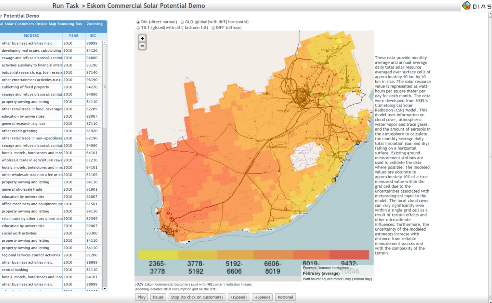
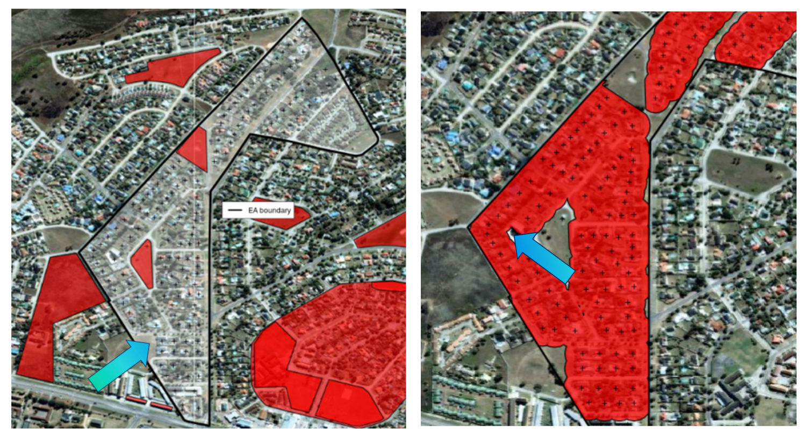
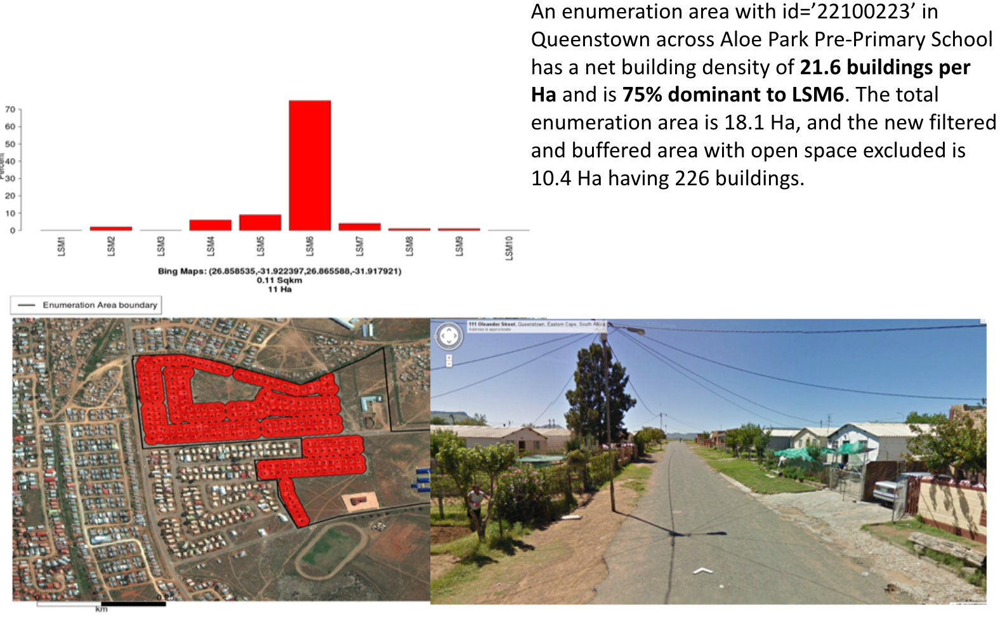

Modeling
Find below an overview of some of the research and modelling projects i have been involved in and gained experience as a data scientist.1
Renewable Energy Forecasting
Solar PV
- Solar Potential exploratory tool developed in DIAS (In house R shiny framework - before R shiny existed)

Wind
Hydro
Eskom Geo Based Load Forecasting
Domestic Building Density per LSM Estimates South Africa
Linked big and complex spatial data in Oracle Spatial, and developed a spatial filtering algorithm to exclude public spaces.
Filter out public space areas with open street map layers. Use spatial buffering algorithm below to further filter out public space. Find Nearest Neighbour (NN) distances distribution of all the buildings in each enumeration area. Finding nearest neighbour for 11,310,724 buildings in 80 000 areas. Buffer width = mean(NN) + 1.96 stddev (95th)
Draw Buffers around each building (red) merging into each other. Filter out buildings with nearest neighbour distances > mean(NN) + 2 stddev. New area size (red) is more robust and proved to exclude public space undetected before.

Example where algorithm excludes a public park in an enumeration area
Overlayed with Google street view and Spatial LSM intelligence:

Inter connector Feasibility Study ANNA
Market Analysis SAPP/EAPP
SAPP Pool Price Forecasting
Virtual Power Station
Footnotes
This page was created by me with Quarto https://quarto.org/↩︎